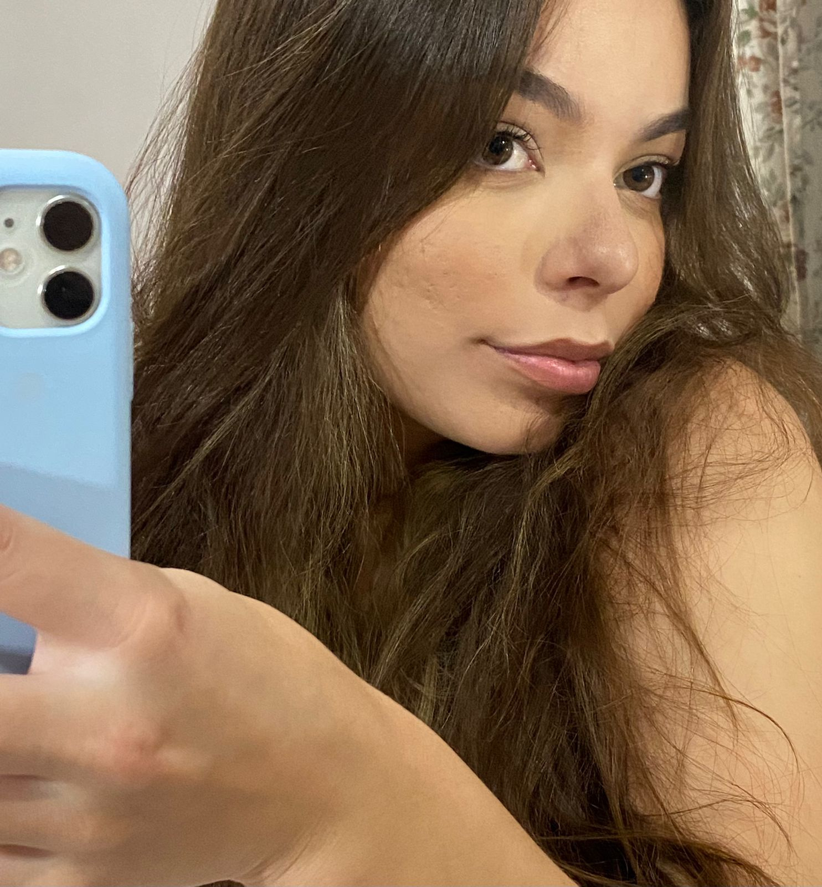
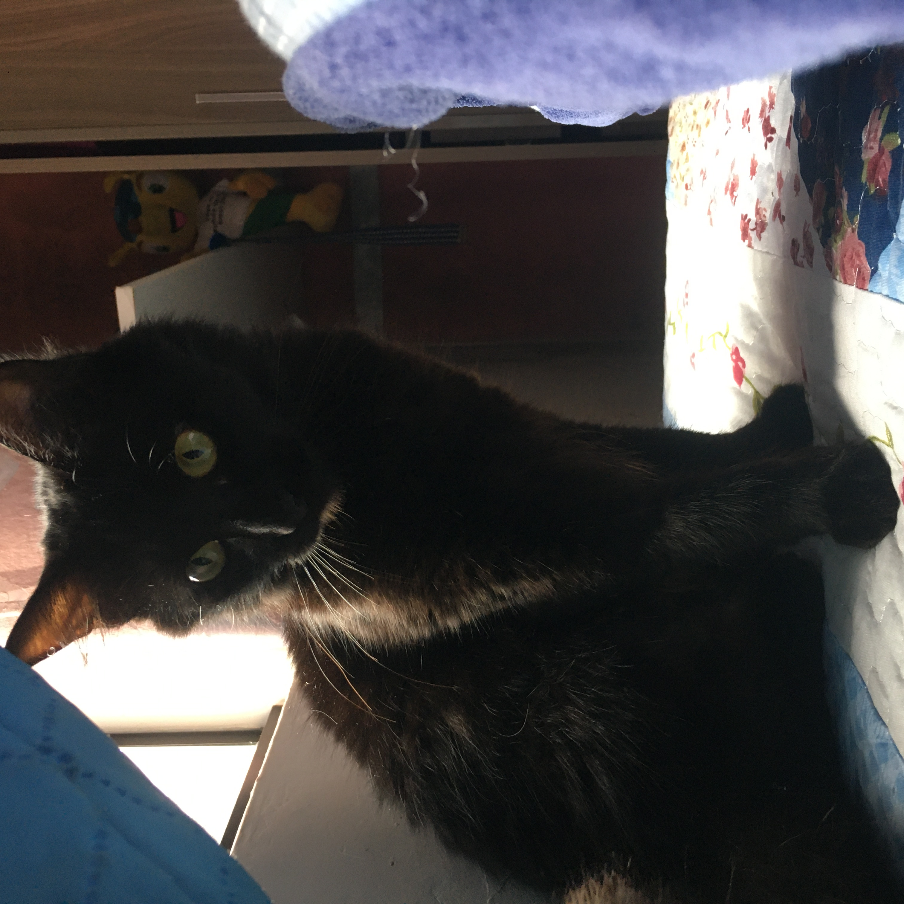
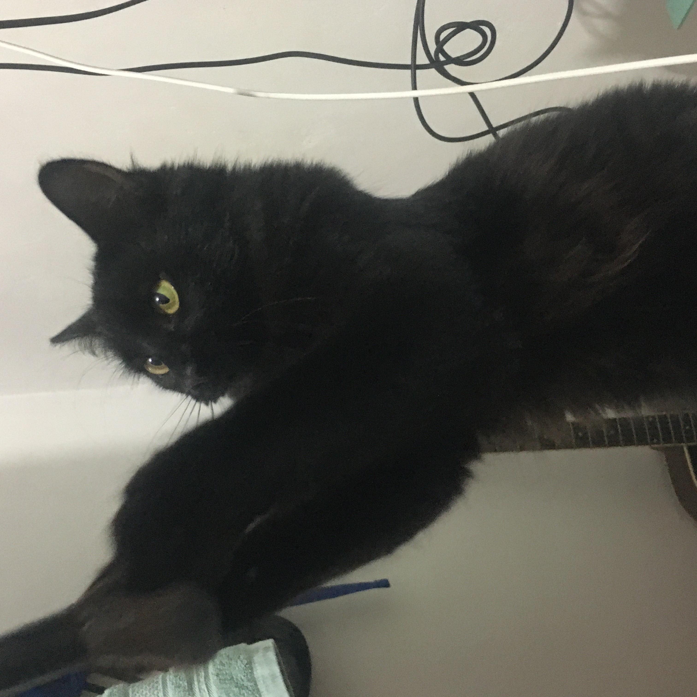
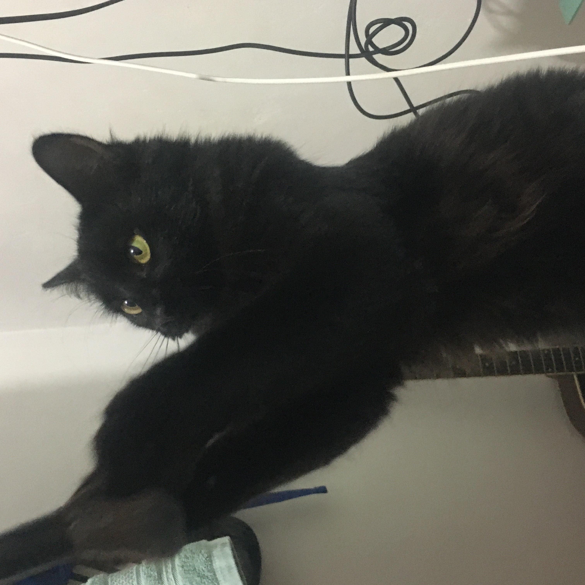

APRESENTAÇÃO

★ Olá Professor, me chamo Vitória, tenho 19 anos e estou no primeiro período de TSI. Este é meu
primeiro contato
com
html, nunca
tive experiência com este conteúdo, mas acredito que posso trabalhar para o meu crescimento nesta área.
Não tinha interesse em fazer este curso, minha opção era Odontologia, totalmente diferente. Resolvi dar
uma
chance para programação, e sinceramente, to muito feliz por essa decisão.
UM POUCO SOBRE MEU DIA A DIA
★ Durante minha semana eu trabalho em tempo integral, quase não sobra tempo para fazer algo
relacionado as
aulas,
mas dou meu esforço no tempo livre. Trabalho em um Despachante, administro documento de veículos. Gosto
de
me
manter ocupada, por mais que seja cansativo as vezes.
Nos fins de semana, gosto de sair com meus
amigos
ou
passar um tempo com a familía. Não foco muito em estudar, mas quero criar uma rotina para isso. As vezes
também
gosto de tirar um tempo para ficar sozinha e fazer coisas que eu gosto.
COISAS QUE GOSTO DE FAZER
- Assistir Animes
- Dormir kkkk
- Cozinhar algo que gosto
- Sair com meus amigos
- Ir para faculdade (pode parecer mentira, mas juro que não é)
!PAROU! PAROU! !PAROU!
Algumas fotos da Diana (minha gata) 🐈

 

MINHA PERSONALIDADE
- Sou bastante extrovertida, simpatica e sempre alegre, mas também tenho meus momentos especiais onde consigo ser bem complicada.
- Gosto de estar sempre ouvindo o que as pessoas tem a me dizer, uma excelente ouvinte eu diria.
- Sou bem sensível e as vezes não consigo lidar com as minhas emoções. Ansiedade é o que não falta.
✌ FILMES, ANIME E MÚSICAS ✌
- Filme: PIRATAS DO CARIBE
- Anime: KIMETSU NO YAIBA
- Músicas: PLAYLIST
MEUS PLANOS PARA O FUTURO
Bom, como encerramento do site, quero falar um pouco sobre meus planos.
Tenho muitos sonhos que desejo realizar, primeiramente, entregar meu esforço a essa área que escolhi como minha profissão, acredito que tenho muita capacidade para crscer aqui, mas isso vai depender totalmente do meu esforço.
Acima de tudo, quero estar sempre junto da minha família e amigos!
FINALIZAÇÃO
📜APÓS DESENVOLVER O SITE:
Por mais que tenha ficado simples, gostei do meu desenvolvimento com HTML. Coloquei em pratica o conteúdo explicado em sala. Espero que goste!
📌REDES SOCIAIS📌